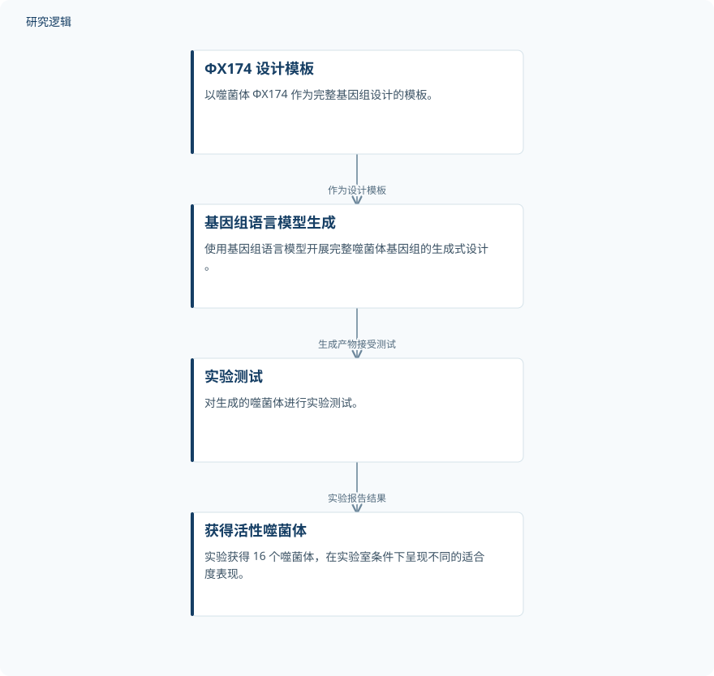

摘要解读
利用基因组语言模型生成式设计噬菌体
Generative design of bacteriophages with genome language models
解读更新 2026-11-10 11:40 · 依据公开摘要整理，未核验全文细节
当生物功能依赖整个基因组中多个部分的协同作用时，生成单个基因还不够。这项研究以噬菌体为对象，探索基因组语言模型能否设计完整基因组，并通过实验检验生成产物的活性与功能。
文章目录
从单个基因走向完整基因组
许多重要生物功能并非由单个基因独立决定，而是来自整个基因组编码的复杂相互作用。本文关注的核心问题，是生成式设计能否跨越单基因层面，得到能够发挥生物功能的完整噬菌体基因组。以下解读仅依据本次提供的完整摘要，不代表对论文全文的评价。
以 ΦX174 为模板，连接生成与实验检验
研究使用基因组语言模型，以噬菌体 ΦX174 为设计模板，生成具有目标宿主趋向性的活性噬菌体。摘要明确提到实验测试，以及用于确认生成噬菌体结构特征的冷冻电子显微镜观察；但未展开模型训练、序列筛选和具体实验流程，不能据此复原完整技术方案。
依据摘要整理的噬菌体生成与测试示意


仅概括摘要明确陈述的模板、生成和实验测试关系，不表示论文原图或完整实验流程。
下载 SVG图示关系说明
实线表示相邻阶段的信息流，虚线表示跨阶段联系或反馈。
ΦX174 设计模板 → 基因组语言模型生成：作为设计模板；基因组语言模型生成 → 实验测试：生成产物接受测试；实验测试 → 获得活性噬菌体：实验报告结果
活性、结构与抗性菌株应对的不同层次证据
实验测试获得了 16 个噬菌体，它们在实验室条件下呈现不同的适合度表现。这说明摘要报告的成果不只是生成基因组序列，还包括获得具有活性的噬菌体。不过，“不同适合度”并不等同于所有生成产物都优于设计模板，摘要也没有给出相应的定量比较。
实验室结果距离治疗验证还有哪些信息缺口
冷冻电子显微镜确认，一个生成噬菌体在其衣壳中使用了进化关系较远的 DNA 包装蛋白；生成噬菌体的混合物还能够迅速克服对 ΦX174 耐受的大肠杆菌菌株。摘要将后者表述为通向人工智能生成噬菌体疗法的一条路径，而不是已经验证的治疗效果。
仅凭摘要，无法判断候选基因组总量、生成成功率、实验重复、宿主菌株覆盖范围，以及适合度和混合物效果的具体比较基准；也无法判断更广泛的安全性、稳定性与治疗验证范围。这些属于当前材料未提供的信息，不能据此认定论文没有开展相关工作。
阅读启发：区分“能生成”与“功能得到验证”
阅读启发：这项工作值得沿着“完整基因组生成—活性检验—结构与功能证据”的联系继续阅读。尤其应关注目标宿主趋向性如何定义、不同适合度如何比较，以及混合物应对抗性菌株的结论适用于哪些条件。对于生成式设计，更有价值的问题不是序列看起来是否合理，而是哪些目标功能已经获得直接证据。
以上为本站阅读启发与建议，不是论文已验证的结论。